Interative Design Project: Partiful Past Events Team
Team: Ivery Chen, Viviana Wei, Sohum Sanu, David Song
Introduction
This project was part of CS 1300 UI/UX at Brown University. The point of this project was to replicate a common situation faced by designers in industry: designing a solution based on a client request. Our team chose a design problem from a YC startup and completed the entire iterative design process.
Requirements
For this project we completed the following.
- Identifying and understanding a brief/problem to work on
- Sketching ideas and divergent ideation
- Participating in a peer critique in studio and revising the prototype based on feedback
- Creating or refining a style guide
- Creating a final, clickable, high-fidelity prototype
- Presenting your clickable prototype to your client and receiving feedback
- Revising your prototype based on the last round of client feedback
Part 1: Problem Statement
First, our team made sure to clarify the key objectives and goals for this project. Linked is the working copy of our project brief.
Client
Our client was
Partiful.
Partiful is a website and app that allows users to create
delightful event pages for birthdays, hangouts, and
everything in between. Hosts can invite friends and
friends-of-friends when they don't have a phone number or
socials. Event pages build hype around the party, allowing
guests and hosts to interact with each other. The company
focuses on simplifying the cultivation of real-world
friendships.
Feature Requests
PROBLEM STATEMENT: How might we make it easier for hosts and guests to navigate to their past events?
BULLSEYE CUSTOMER DESCRIPTION:
CUSTOMER MOTIVATIONS:
CUSTOMER PAIN POINTS:
SUCCESS METRICS:
Our you can use the grid system with 2 columns like this;
Questions we asked & answers
We had some questions about how our design should fit into the broader goals of Partiful as a service, particularly in terms of promoting social interaction between users on the app and offering users the ability to upload and view photos taken at an event. Particularly, we wanted to know if we should be thinking about the bigger picture and designing for more connections between users through our design for past events. The founders reiterated to us that their main goal was for us to improve the visibility of past events, but emphasized that we should explore a wide range of solutions and creative ways to solve this problem.
Refined Project Brief
The first round of discussion with the founders cleared up a lot of questions we had. In particular, the founder’s assertion that it was very difficult for the average user to navigate to past events as well as the greater goal of improving the app’s learnability was a great starting point for our design. From here, we began brainstorming our initial sketches (2 for each member) and exploring various ways to improve the visibility of past events (both creative and straight-forward solutions.)
Part 1: Sketching
Basic Sketches from our team
We've attached all the basic sketches from all four team members below.
Ivery's Sketch 1
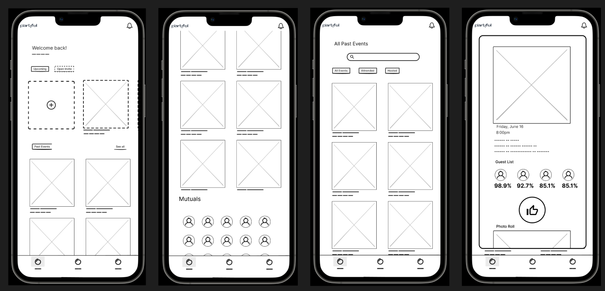Ivery's Sketch 2
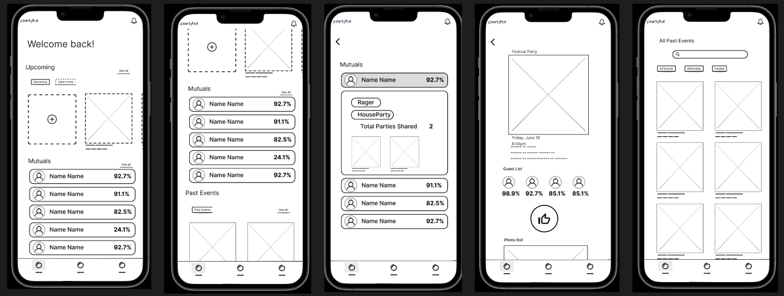Viviana's Sketch 1
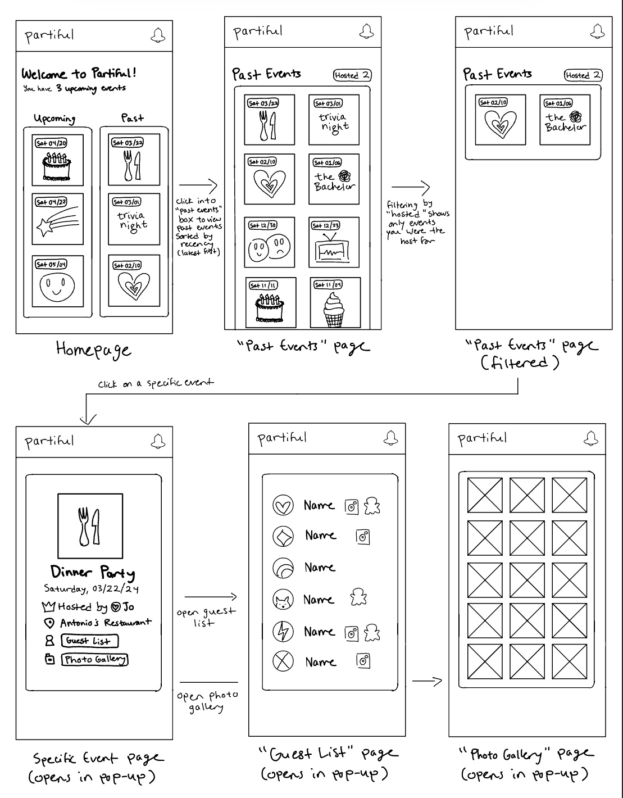Viviana's Sketch 2
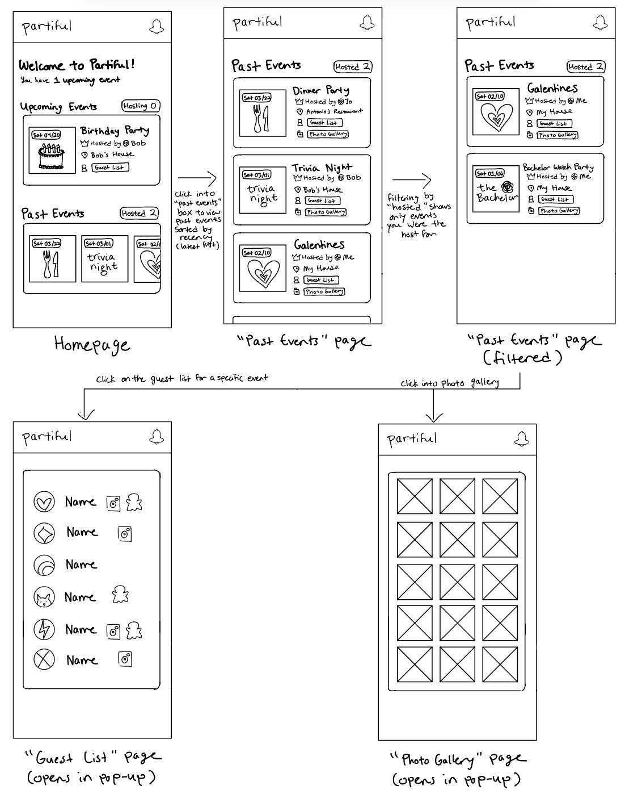Sohum's Sketch 1
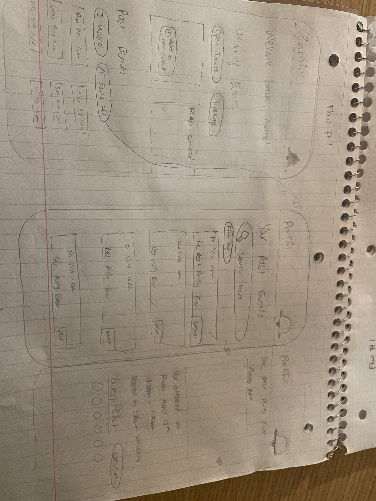Sohum's Sketch 2

Sohum's Sketch 3
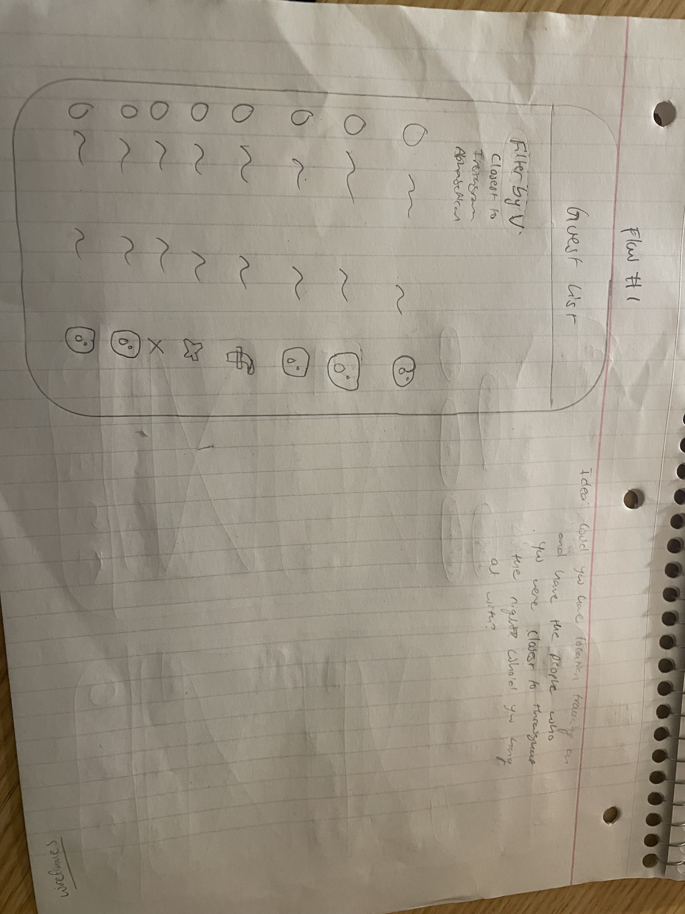Sohum's Sketch 4
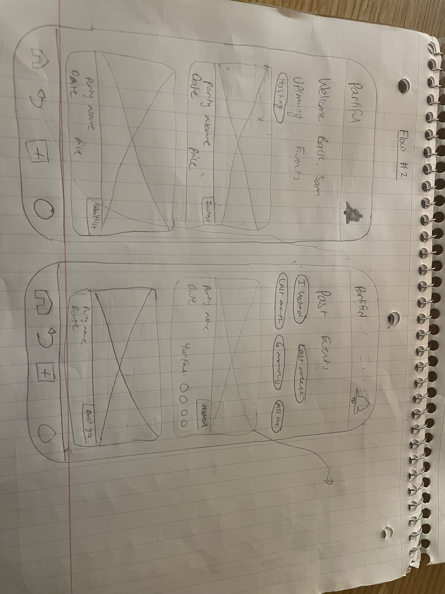Dave's Sketch 1
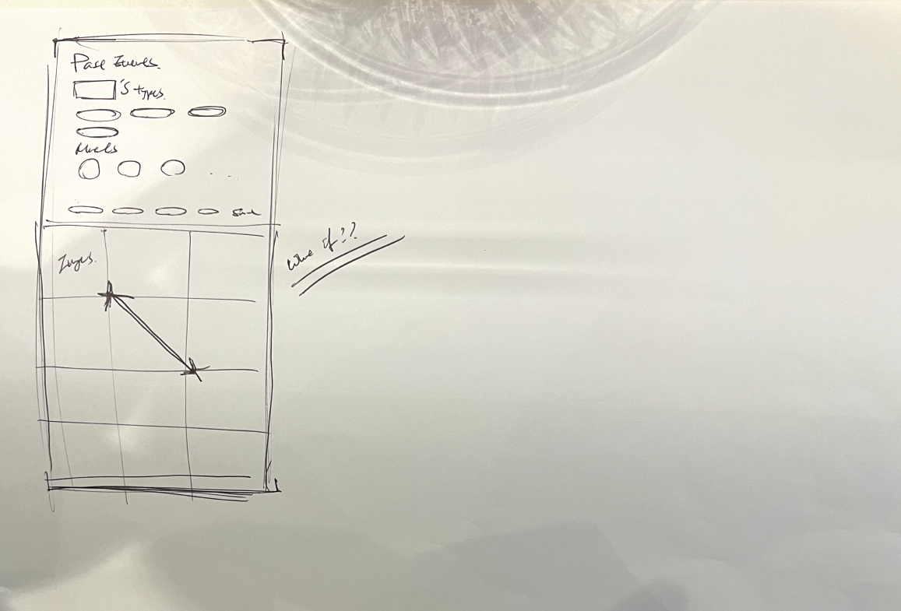Dave's Sketch 2
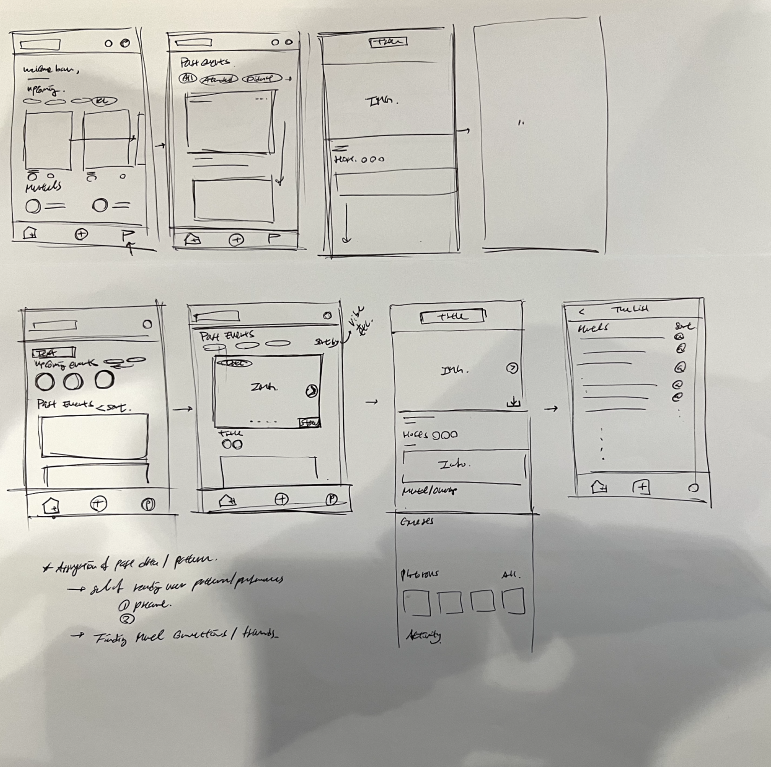
Part 2: 1st Wireframing
Wireframe Interation 1 — description of design decisions
Initially, past events are not seen at first sight. There are
five filters, Open Invite, Upcoming, Hosting, Attended and Past
Events. To solve this, we redesigned the events landing page by
separating the initial 5 buttons into two sections, Upcoming and
Past Events. We added a search bar at the top to help users
easily find any event. For the Upcoming section, we removed the
add event button as there is already an add event button in the
nav bar. We designed with in mind different scenarios. If a user
has 0 upcoming events, the space would be filled up by Open
Invites, making the page full. If a user has many upcoming
events, users can still swipe horizontally and after their
upcoming events they’ll find open invite events.
Underneath that is a list of mutuals. with fire emojis and a
number to indicate the number of shared events between the
users.
Upcoming events can be scrolled horizontally, and Past events
can be scrolled vertically. The two scrolling directions are
justified by the fact that usually users have fewer upcoming
events but many past events. Past events cards are displayed and
can be filtered by Host, Attend, and can be sorted by factors
like 1 week, 1 month, 1 years, etc. This section is designed for
infinite scrolling, we believe that this is the best way of
using the iphone vertical space and allowing users to view past
events easily, in an instagram-like way.
 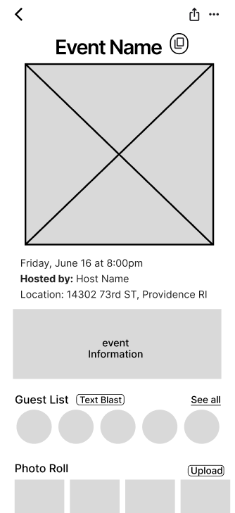
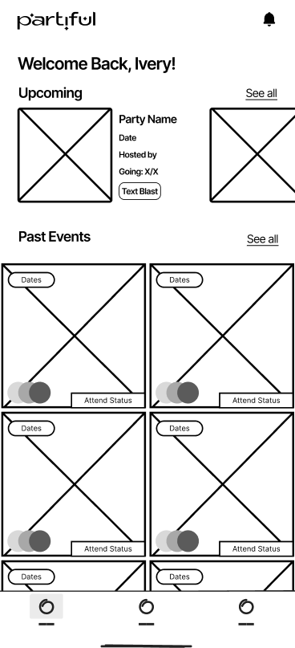
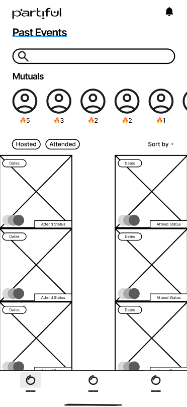
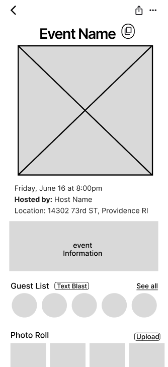
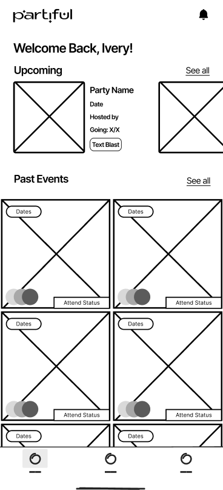
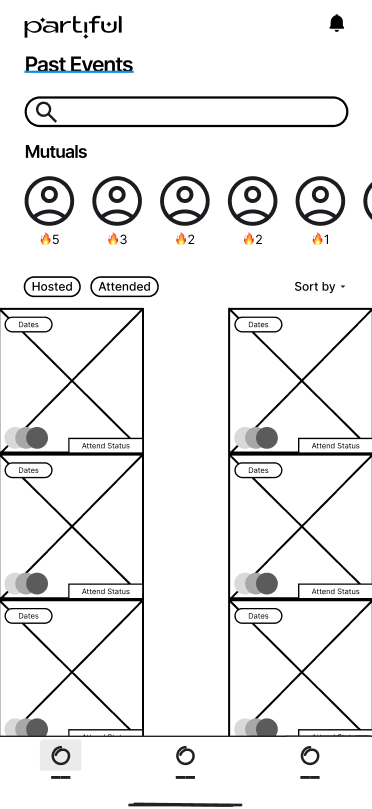
Part 3: Startup Check in
We recorded a 5 min presentation of your wireframe using Loom for feedback. Here's the link to our loom.
Critique & Feedback
Our success metrics are 1. More users navigating to past events, 2. More activities, 3. More Users connecting with one another from past events. In the current Event page, past events are not visible on the first view, making it harder for users to find and spend time on the page. Our design displays past events on first sight. Our design incorporates functionality that provides users with concrete reasons to navigate back to past events, such as the ability to clone past events, and ways to make mutuals more meaningful by highlighting the number of shared events between users. We created pages for the home page as well as the event page. Users can click onto an event and be taken to the event page. We designed for both Host view and Guest view. For the host view, an edit button is now collapsed on the top right corner for intuitive editing. We included a ‘cloning’ button after conducting a user interview with a Partiful host, who mentioned that their pain point is that it is frustrating to add the same invitees from a previous event. An idea arose which is to duplicate an existing party template. This also incentivizes users to return to past events. We moved Text Blast to next to the Guest list, an intuitive place to text invitees.
Part 4: Wireframe Updates
Our Changes and Rationale
In our previous wire frames, we included ideas about
remaking the event page itself, profile page, mutual
contacts page. The feedback clearly explained that our scope
is solely to focus on past events in the homepage.
Therefore, we had to only work on redesigning homepages
going forward. We also realized that their main goal with
this project is to be creative and design unique ideas for
displaying past events. We wanted to work on
discoverability. This means that a user can easily see all
the actions they can do from the get go, therefore, past
events should be easily navigable for the user.
To solve the problems, we redesigned the events landing page
by separating the initial 5 buttons into two sections,
Upcoming and Past Events. We added a search bar at the top
to help users easily find any event. For the Upcoming
section, we removed the add event button as there is already
an add event button in the nav bar. We designed with in mind
different scenarios.
Part 5: Hi-Fi Prototyping
Here is the link to our Figma page with our Hi-Fi prototypes.
Explanation of Design Choices
Our mid check-in with Partiful was to focus only on the main
events page and think of other ways to display the
information. Based on that feedback, we came up with three
alternatives for the main page.
The first design is similar to the lo-fi that we presented
last week. We have upcoming, mutual and past events as three
sections. We moved past events to the front page so it’s
shown at first sight. In the case that there are upcoming
events, Upcoming can be scrolled horizontally and past
events can be scrolled vertically with infinite scrolling.
The base case is covered so that if there are no upcoming
events, then this slot will be replaced by an open invite
event indicated by the dotted container. In the case of
there are no upcoming events or open invite events, this
space will be filled with an add event button.
The second sign is inspired by social media feeds, because
we know that Partiful intends on becoming more of a social
media platform. For each host, past events and upcoming, we
have notifications. If a user uploads an image then a
notification would pop up for past events. If a party guest
RSVPs then a host would see a notification for that page.
You can scroll down and look at all of the notifications and
also press show less to collapse them. The rationale behind
is that It prompts users to revisit a past event to look at
updates.
And then lastly our third design, map, is inspired by snap
maps. The idea is that when you open the app you will see
upcoming events and exactly where they are located. Next to
each event, location, time and attend status are also shown.
Similarly, if the user navigates into the past events tab,
they can also keep track of where they have been. We wanted
to implement past events like a heat map so users can also
see where the party super hosts are and where the hottest
activities are located nearby.
Basic-hifi page 1
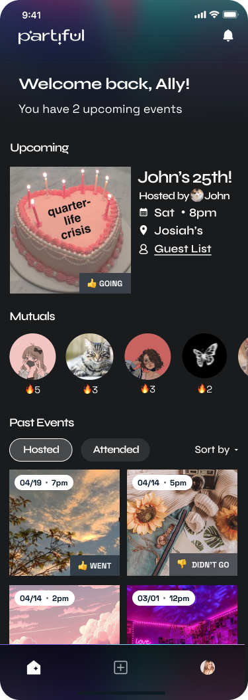{kind=link}
Explanation of Style Guide Choices
The team received a style guide from Partiful which included a DropBox folder with fonts and Figma mockups of their homepage, settings, profile, and event page customization. Partiful designed their style guide with their ethos in mind “fun,” “creative” and “exciting” for the user. This is demonstrated by their font choices of Syne and TWK Lausanne Pan Family which evoke a sense of professionalism coupled with elation. Partiful also designed their color scheme around light blue, purple, and pink. The light blue and pink are high energy colors which drive a sense of enthusiasm when using the app. Purple as a tertiary color suggests mystery and a feeling of wonder. The Partiful style guide was focused more on the fonts and actual design assets of their IOS app. We created a new style guide which highlights the fonts, colors, and a few design elements (buttons, filters, and event labels). All three versions of the high-fidelity design adhere to the WCAG AA accessibility guidelines. To ensure optimal contrast between text and backgrounds, we primarily used white and light gray for our text colors. We also made use of shadow effects and grouped UI cards to optimize page organization. Additionally, following the existing design system from Partiful, we incorporated emojis and symbols in addition to information to enhance the accessibility and readability of each component. Most of the interaction designs followed standard mobile interaction gestures, such as horizontal and vertical scrolling and pressing on an item card.
Part 6: Final Feedback
Basic:
The founders thought we handled this version well to split the
5 filters into three categories, which makes more intuitive
sense. They prompted us to consider if we want to expose all
guest lists from the top level for an upcoming event, as then
it would eliminate the need for users to click onto an event.
It could be cool for Right Now events to have all the
information displayed, but have other upcoming events be
smaller cards without all the information displayed. They
liked having mutuals displayed on the main page, as it
encourages interactions between mutuals (including sending
emojis and chatting).
Feed:
The founders view the feed as a separate page in addition to
the main page, but a little too cluttered as the landing page
itself. It would be interesting to explore an activities feed.
They encouraged us to take this concept and play on the
hierarchy of information. They also prompted us to think about
other ways to display these notifications - do we need
timestamps for each card? What if each event could be
‘pinched’ to expand notifications? They wanted us to explore
other gestures for the iOS app. For example, users can tap an
event card and underneath there are a bunch of user avatars
stacked next to each other, which can be clicked on to expand
to see notifications. They do believe that this feed design
would incentivise people to click on event cards.
Map:
This proposal was received with enthusiasm, as Grace, one of
the designers, had previously pitched a similar idea. They
would be interested in seeing how we can combine past events
and upcoming events into one map, especially how we would
visualize past events as a heat map. They really enjoy the
current visualization of events, as it reminds them of a
pulsing animation. Perhaps if an event is upcoming it can
pulse more than other events.
Conclusion
In conclusion, this project was a great experience in learning how to work with a team towards a final goal. We really enjoyed getting to work with Partiful and brainstorming various ideas for their Past Events page, especially because many of us were already familiar with the app, and getting direct feedback from the founders was a great opportunity for us to experience what it may be like working in a real world design team. As a team, working through the steps of sketching, lo-fi wireframes, hi-fi prototyping, then receiving feedback was invaluable to the development of our design skills and ability to work with others.
Copyright and license
Code released under the Un License License.
For more information about copyright and license check choosealicense.com.